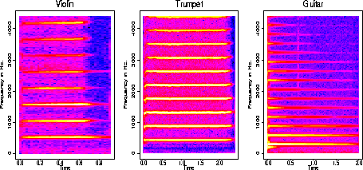
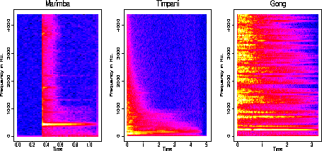

Rafael A. Irizarry's
Music and Statistics Demo
Spectrograms of Harmonic Instruments

Non-Harmonic Instruments


Low.............................................High
How to play the sounds: This page contains sound examples mentioned
in some
of my papers related to music and statistics, mainly
this
JASA article . Most sounds, represented by this;
 symbol,
are in aiff format which is CD quality. Your audio player should be able
to play these files, all you have to do is click. Four of the files are
songs so they have been compressed to MP3 files, represented by this symbol
symbol,
are in aiff format which is CD quality. Your audio player should be able
to play these files, all you have to do is click. Four of the files are
songs so they have been compressed to MP3 files, represented by this symbol  .
For macs and PCs the RealPlayer
(get the FREE version) can play these, for unix you can download . If you
want to analyze the music files as data, you should get a program like
sox
that can convert aiff files to ascii.
.
For macs and PCs the RealPlayer
(get the FREE version) can play these, for unix you can download . If you
want to analyze the music files as data, you should get a program like
sox
that can convert aiff files to ascii.
Here is a more detailed explanation on how to convert sound signals into ASCII file
Statistical Applications
Statistics has been applied in various ways to music. For
example, various stochastic techniques have been applied
in composition. The melody and rhythm in this song
(716 KB mp3 file) are the outcome of a random process. The intervals between
each note was produces by a Markov chain. The rhythm was chosen at random
from various rhythmic patterns that fit the riffs being played by the bass
and the guiro.
Physicist have studied the
spectral properties of different musical signals and speculated on the
possibility of it being so called 1/f noise (learn more about 1/f noise
and music from a paper
I wrote with David Brillinger).The
following 3 mp3 files are melodies produced with outcomes of an IID process
(white noise), a random walk (brown noise) and a process with 1/f
noise (pink noise):
White music (236 KB mp3 file).
Brown music (214 KB mp3 file).
Pink music (295 KB mp3 file).
Sound Synthesis and Analysis
The application that most interests me is sound synthesis and analysis.
Sound can be represented as a real-valued function of time. This function
can be sampled at a small enough rate so that the resulting discrete version
is a good approximation of the continuous one. This permits one to study
musical sounds as a discrete time series, an entity for which many
statistical techniques are available. Physical modeling suggests that many
musical instruments' sounds may be characterized by a
deterministic locally periodic and stochastic signal model. In general
harmonic instruments are better described by this model than non harmonic
ones.
The violin
,trumpet
and guitar
are all harmonic instruments. The graphs at the beginning of the demo are
spectrograms of the sound signals. Notice the yellow lines at multiples
of the fundamental frequency we hear. The marimba, timpani
and gong
are non-harmonic.
It is believed that the strength of at the
different multiple frequencies (the harmonics) somehow determine pitch.
The trumpet
has many strong harmonics which is associated with a bright sound. A clarinet
has
few strong harmonics. Notice the difference in sound and in their
periodograms.
The high values in the spectrogram that are not at harmonic frequencies
is what we model as a stochastic signal. Notice that the non-harmonic instruments
have a lot of "noise".
Separation of signal and noise
We are interested in separating the approximately periodic from the stochastic
signal and finding parametric representations with musical meaning. To
do so a local harmonic model that tracks changes in pitch and
in the amplitudes of the harmonics is fit. We are assuming a model
y(t) = s(t) + e(t), with s(t) an approximately periodic function and e(t)
noise. The deterministic signal s(t) will have period inversely proportional
to the fundamental frequency being played. We estimate s(t) using local
harmonic estimation and use the residuals of this fit as the estimate
of e(t).
Here are some examples of the separation of the two parts:
(all files have been amplified to same volume)
|
Instrument
|
Original
|
Fitted
|
Residuals
|
|
violin
|

|
|
|
|
clarinet
|
|
|
|
|
guitar
|
|
|
|
|
didjiridoo
|
|
|
|
Notice that the residuals sound very
much like what we would expect: a screechy metallic sound for the violin,
surplus blown air for the clarinet, and a pluck with no tone for the guitar.
Notice how the separation doesn't work very well for the non-harmonic didjiridoo.
Window Size Selection
Deterministic changes in the signal, such
as pitch change, suggest that different temporal
window sizes should be considered in the local estimation. Ways to choose
appropriate window sizes are developed in this
paperPDF. We carry out the an estimation for a shakuhachi
flute sound characterized by 3 segment: Rapid change of pitch (0 -
0.5 secs), fix pitch (0.5 - 3.0 secs), tremolo (3.0 - 4.0 secs), and fixed
pitch to end the sound. This flute is also characterized by a noisy (windy)
sound. We fit our procedure with a fixed small window size, a fixed large
window size, and then using an adaptive window size.
|
Window Size
|
Fitted
|
Residual
|
|
Fixed Large
|
|
|
|
Fixed Small
|
|
|
|
Dynamic choice
|
|
|
If we listen to the sound or look at
residual
plots we notice that the fixed windows over fit and under fit respectively.
In the residuals sound for the large window fit we hear signal during the
tremolo and for the small window size fit the fitted signal sounds too
noisy, too similar to the original. In
this
plot we see how the dynamic window chooses smaller size in parts that
are less stable.
Applications
Amongst other things our analysis provides estimates of the harmonic signal
and of the noise signal. Different musical composition applications may
be based on the estimates. The procedure separates harmonic component and
noise component of signal, provides pitch estimates, and the harmonic signal
is reconstructed into individual harmonics.This
plot is an example of the resulting estimates from an oboe
sound :
Uses in composition
The function s(t) is defined by parameters that represent local pitch,
and local amplitude and phase of the harmonics. We may tweak the estimates
of these parameters to modify s(t) and construct a new sound based on the
original. We can change pitch, duration, and timbre independently of each
other. As an example we run the analysis on an oboe
sound. Musicians say that if one listens to the sound of an oboe closely
the sound of a soprano is heard at an octave above the pitch of the oboe
sound. By wiggling the estimated amplitudes of the even harmonics we can
make the hidden
soprano come out. We can amply the residuals obtained when analyzing
the violin to create the sound of a violin
played by a beginner.
Removing Reverberation
When an instrument is played in a room with echo, signals from previous
notes may be heard after the instrument has stopped producing the notes.
Notice in the sound of a pipe
organ playing two notes how we can hear the first note during the playing
of the second. This can clearly be seen in the spectrogram.
During the playing of the second note, the yellow line related to the first
note is still there. We also see the presence of an approximately
periodic component around the 50 Hz. frequency, this is probably due to
the sound of the wind going through the organ pipes, an important sounds
that helps our ears know it's an organ. If we assume the deterministic
signal s(t) is locally periodic with period equal to the fundamental frequency
being played and use local harmonic estimation to estimate s(t) and e(t),
then the spectrogram
of the residuals shows a yellow line representing the reverb note and
. Not a good fit. We can also perform residual analysis by ear
by listening to the sound
of the residuals. If we listen to the estimate
of s(t), it sounds similar to the original, they are different because
we don't hear the reverb during the second note, and also the 50 Hz frequency
is not heard. It doesn't really sound like an organ anymore. Now if we
instead fit a model with s(t) composed of three periodic components s1(t),
s2(t), and s3(t), we obtain a better fit and a separation
of each component. We can look at plots
showing the results and also listen to them:
Original
soundfitted
s1(t) fitted
s2(t)fitted
s3(t)residuals
Note: If you have small speakers with no
bass, you probably won't hear some of these sounds.
I couldn't have made this page without the help of David
Wessel, Adrian
Freed, Matt Wright
and the people at CNMAT.
And also Ofer Licht, Phil
Spector and David
Brillinger from the stat department
at Berkeley.
Get the details from this
paper.